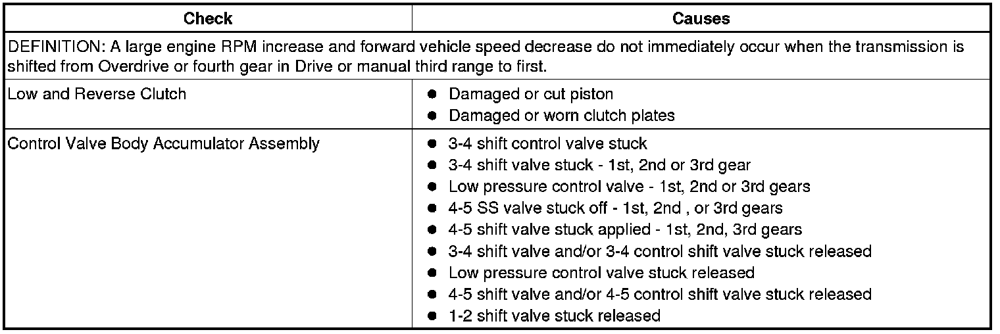

Operation CHARM
: Car repair manuals for everyone.
Home
>>
Cadillac
>>
2008
>>
SRX AWD V8-4.6L
>>
Repair and Diagnosis
>>
Transmission and Drivetrain
>>
Automatic Transmission/Transaxle
>>
Testing and Inspection
>>
Symptom Related Diagnostic Procedures
>>
5L40-E/5L50-E Automatic Transmission
>>
No Engine Braking in First Gear
No Engine Braking in First Gear
No Engine Braking in First Gear
